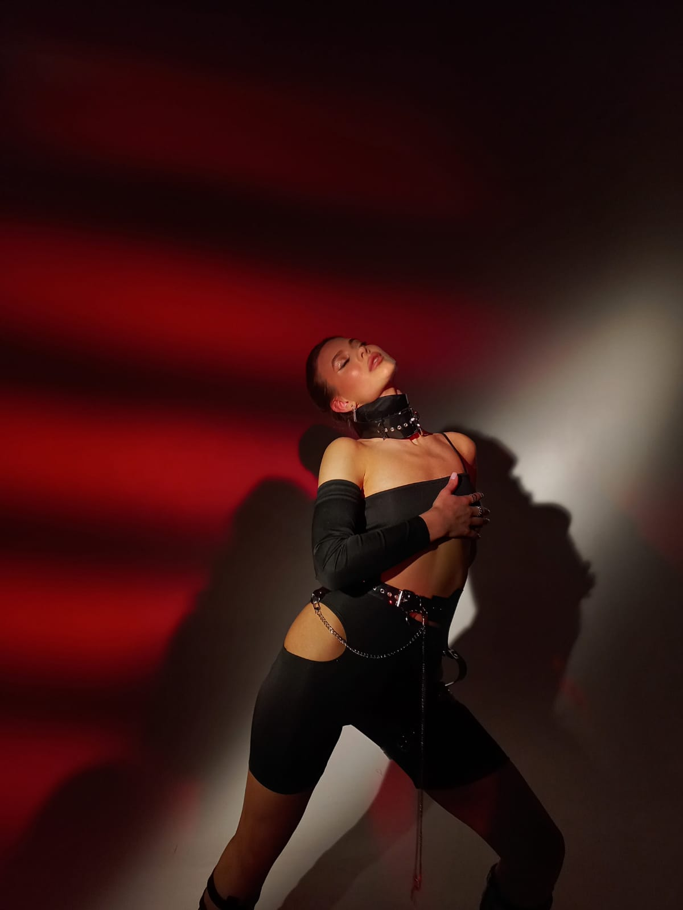

«В фотографии есть настолько тонкая реальность, что
она становится все более реальной, чем сама реальность»
Лучшие фотографы по мнению "Нью Йорк Таймс"
photo.destruction
Профиль данного фотографа направлен на групповую съемку.
Преимущество в красочной обработке с присутствием элементов
ярко выраженных теней и светлых элементов фотографии.
di.polanski
Преимущество в темной обработке с выраженной экспозицией
и небольшой контрастностью, которая слегка подчеркивает
фотографию. Серийная съёмка и индивидуальные фотосессии.
krreegi
Молодая и перспективная девушка, съёмка которой направлена
на моделей. Преимущество в красочной обработке, работа со светом,
с целью повышения объема и насыщенности фотографии.

Информация обо мне
Дорогой друг, хочу познакомить тебя с одним прекрасным человеком, у которого
есть мечта, стать таким же крутым фотографом и фотомейкером как и личности выше.
Ну вообще, мне нравится фотографировать. на любителя конечно, да и с обработкой
максимум а 7/10 тянет,но я не расстраиваюсь, потому что знаю, что опыт приходит со временем)
Такой же как и ты бездельник, листающий видео в
ютубе, в надежде научиться чему-нибудь новому
Красивые девушки? Деньги? Спорткары? НЕТ!
Для вдохновения и прекрасного настроения достаточно всего лишь видеть жаркие закаты в середине лета.
Закаты.. Что может быть прекраснее? На самом деле много чего, но вдохновляют именно они.
Теперь ты знаешь кто я, чем занимаюсь и что меня вдохновляет) Все остальное вовсе не важно
Чем я занимаюсь?
fantrixx
Что меня вдохновляет?